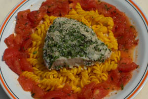

Tonijn met groene kruiden en tomaatbasilicumsaus
Ingrediënten (voor 4 personen)
- 4 tonijnmedaillons van 150 g
- 200 g saffraannoedels
- broodkruim van 8 sneetjes wit brood
- 2 takjes peterselie
- 50 g kervel
- 2 takjes dille
- 4 blaadjes basilicum
Voor de saus
- 4 tomaten
- 2 1/2 dl blanke botersaus
- 3 blaadjes basilicum
Bereiding
- De groene kruiden schoonmaken, broodkruim toevoegen en pureren.
- e tonijnmedaillons met de puree bedekken en 15 min. in de oven (170° C) zetten.
- Voor de saus: de tomaten pellen, het vruchtvlees in blokjes snijden, de blanke botersaus toevoegen en verwarmen.
- Tenslotte de gehakte basilicum bijvoegen en kruiden met peper en zout.
- Een toefje saffraannoedels midden op het bord leggen, de tonijnmedaillons erop schikken en de saus errond gieten.